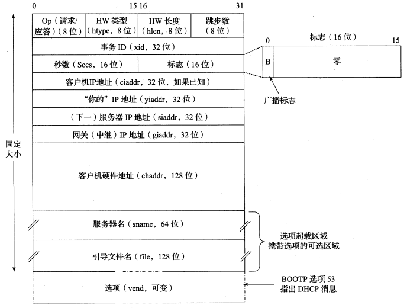
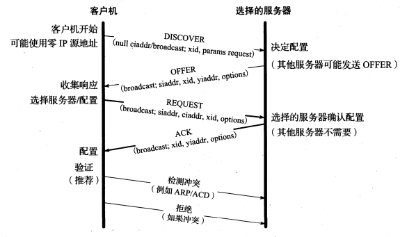

[TCP/IP详解]:DHCP
简介
DHCP属于应用层协议，它的作用是为主机或者路由器指定配置信息(IP地址, 子网掩码, DNS服务器地址等)
DHCP前身是被称为BOOTP的Internet引导程序协议, 该协议已经过时，但是DHCP完全兼容BOOTP
DHCP使用租用机制来将这些配置信息租用给客户机，但租期到了之后，客户机可以选择续约
DHCP的传输层协议为UDP, 客户机，服务器分别使用固定端口号68, 67
1. 地址池与租用
DHCP服务器为客户机提供三种地址分配: 自动分配，动态分配，手动分配, 其中动态分配使用的最多，接下来只关注动态分配
在动态分配中，客户机向DHCP服务器请求一个IP地址，服务器从地址池中选出一个可用的地址作为响应
这个地址池是一个连续的IP地址范围
服务器会根据客户机请求中提供的信息并结合外部信息(如接受请求的接口)为客户机分配IP地址
当服务器向客户机提供租约之后，会将租约写入非易失性存储器当中，以确保当服务器重启之后租约信息不会丢失
DHCP消息格式

该图其实是BOOTP的消息格式，但是与DHCP完全兼容，DHCP可以在上面的选项超载区域携带额外选项
DHCP协议操作
总流程

当一个主机第一次连接该子网时，会经历上面的阶段
DHCPDISCOVER
客户机使用链路层广播来寻找可用的DHCP服务器，消息中包含了自身的相关信息，如自身MAC地址
DHCPOFFER
如果有DHCP服务器接受到了请求，就会发送DHCPOFFER响应报文, 发送方式为单播，因为已经知道了客户机的MAC地址
响应消息中包含服务器提供的IP地址、子网掩码、租期以及提供IP的DHCP服务器的IP地址
DHCPQEQUEST
之所以还需要该过程是因为可能不止有一个DHCP服务器向客户机发送DHCPOFFER, 但一个客户网卡只能接受一个租约服务
因此客户机再次进行广播，广播消息中包含了其第一次接受到的DHCP服务器的IP地址，其他发送租约的DHCP接受到该消息之后
就会收回自己的租约(把分配出去的IP地址归还会地址池等)
DHCPACK
如果服务器可以分配的话，它会响应一个DHCPACK消息表示确认，可如果不能分配的话，就会响应一个DHCPNAC消息
检测冲突
客户机会向服务器发送一个检测消息(如ACD)，用于检测分配的地址是否重复
如果冲突，那么客户机就会向服务器发送一个DHCPDECLINE的消息表示该地址不能使用, 在一段时间过后，可能进行重新检测
如果客户机主动放弃租约，会向服务器发送一个DHCPRELEASE消息
租约更新
有时，上述流程可以被简化成DHCPREQUEST和DHCPACK, 这发生在客户机已经有一个IP地址并且希望更新其租约的情况下，客户机会通过DHCPREQUEST消息来请求其正在使用的地址
获取其他配置信息
客户机还可以发送一个DHCPREFORM消息来获取更多非地址的配置信息
本博客所有文章除特别声明外，均采用 CC BY-SA 4.0 协议 ，转载请注明出处！